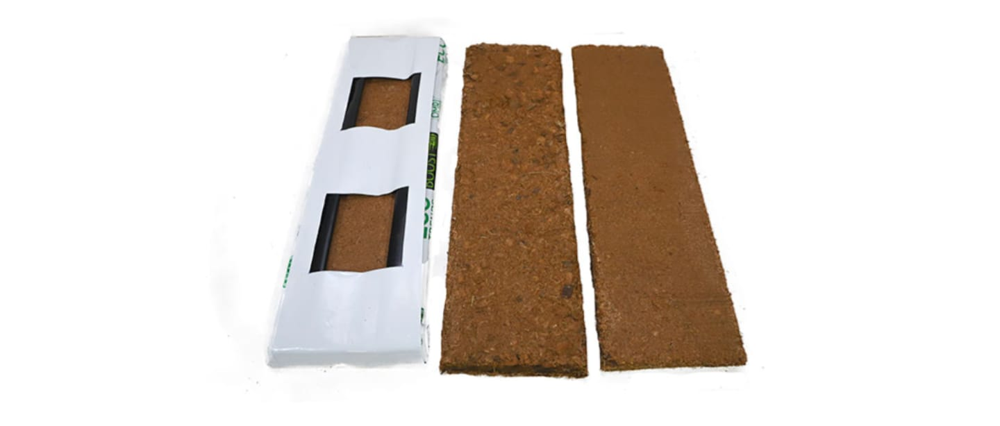
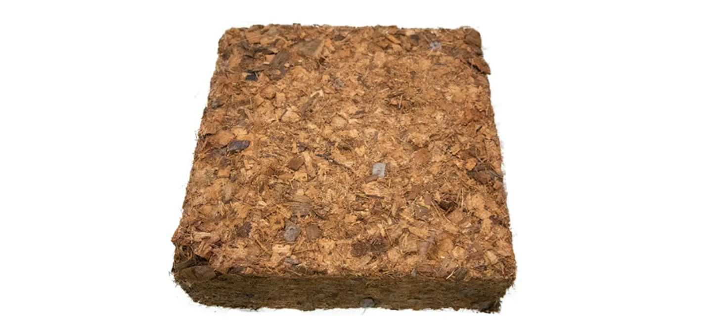
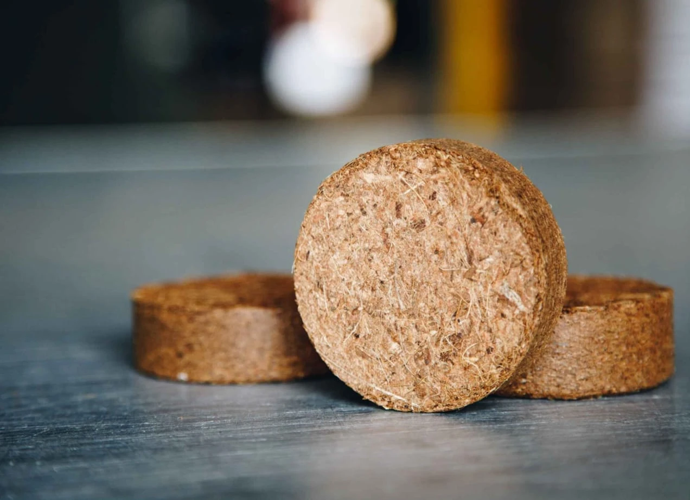
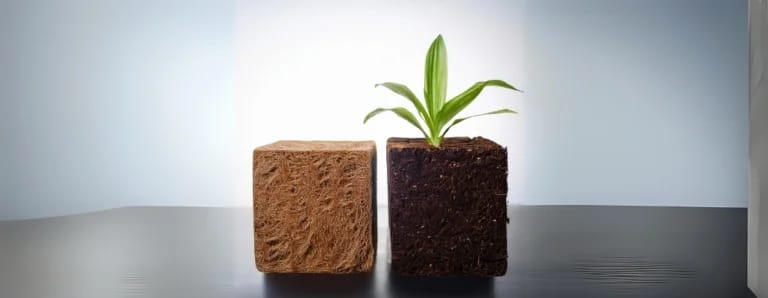
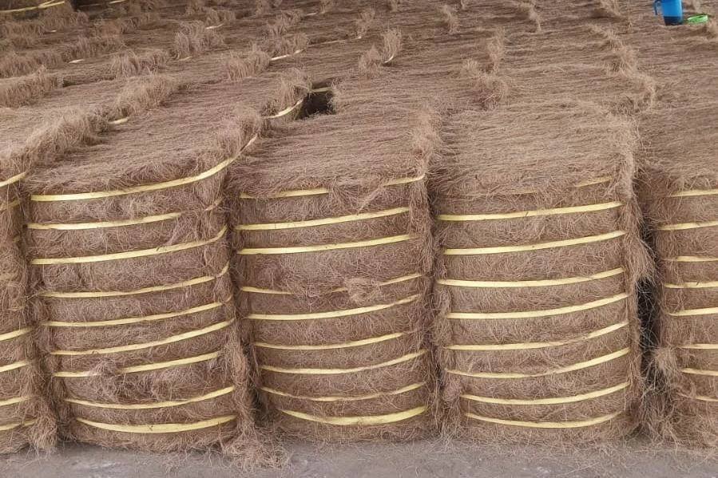

Grow bags, grow slabs, coco discs, propagation cubes & plugs, and mattress fiber bale — manufactured to export quality.
A focused range of coir products, manufactured to export quality and available for sample requests.

Ready-to-use coco peat grow bags with consistent EC and high water-holding capacity, sized to your greenhouse system.

Compressed coco peat slabs engineered for hydroponic and greenhouse crops requiring precise irrigation control.

Compact compressed discs that expand into loose substrate — convenient for shipping and easy handling.

Fine-grade coir cubes for seedling propagation and cutting, offering excellent aeration and root development.

Compressed bales of resilient coir fiber, processed for use in mattress and cushion manufacturing.
Send us your target EC, pH and volume — we'll formulate a substrate to match.